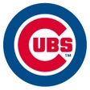

Top Players
The OSA preseason Top 20 position players and Top 20 pitchers in each league (March 30, 2002). Ratings are OOTP’s 20-80 scouting scale. The right-hand columns are each player’s actual 2002 line so far from the export. Click any header to sort.
MLB: Top Position Players
| # | Player | Team | Age | Pos | Contact | Power | Eye | Speed | Defense | 2002 Lvl | PA | AVG | OBP | SLG | HR | OPS+ | WAR |
|---|---|---|---|---|---|---|---|---|---|---|---|---|---|---|---|---|---|
| 1 | Barry Bonds |  New York Yankees New York Yankees | 37 | LF | 60 | 90 | 90 | 50 | 75 | MLB | 181 | .312 | .470 | .790 | 21 | 233 | 3.3 |
| 2 | Todd Helton |  Chicago Cubs | 28 | 1B | 70 | 80 | 80 | 45 | 70 | MLB | 180 | .325 | .428 | .550 | 7 | 163 | 1.7 |
| 3 | Carlos Delgado |  Detroit Wolverines Detroit Wolverines | 29 | C | 50 | 80 | 80 | 25 | 45 | MLB | 151 | .230 | .351 | .437 | 5 | 112 | 0.9 |
| 4 | Alex Rodriguez |  Houston Astros Houston Astros | 26 | SS | 50 | 80 | 70 | 50 | 55 | MLB | 171 | .320 | .398 | .607 | 11 | 168 | 1.9 |
| 5 | Jim Edmonds |  Toronto Blue Jays Toronto Blue Jays | 31 | CF | 55 | 80 | 80 | 40 | 65 | MLB | 165 | .317 | .406 | .592 | 7 | 166 | 2.5 |
| 6 | Jason Giambi |  Miami Marlins Miami Marlins | 31 | 1B | 55 | 80 | 85 | 25 | 55 | MLB | 174 | .301 | .408 | .507 | 7 | 147 | 1.0 |
| 7 | Manny Ramirez |  Milwaukee Brewers Milwaukee Brewers | 29 | LF | 60 | 80 | 70 | 30 | 50 | MLB | 177 | .267 | .390 | .527 | 9 | 146 | 0.8 |
| 8 | Brian Giles |  Oakland Athletics Oakland Athletics | 31 | CF | 60 | 80 | 80 | 55 | 40 | MLB | 172 | .255 | .384 | .447 | 4 | 125 | 0.8 |
| 9 | Albert Pujols | Oakland Athletics | 22 | LF | 65 | 80 | 55 | 40 | 45 | MLB | 178 | .350 | .416 | .656 | 11 | 185 | 2.1 |
| 10 | Sammy Sosa | Houston Astros | 33 | RF | 50 | 85 | 70 | 35 | 60 | MLB | 176 | .250 | .347 | .533 | 12 | 134 | 1.1 |
| 11 | Jeff Kent | Houston Astros | 34 | 2B | 60 | 70 | 55 | 55 | 55 | MLB | 181 | .278 | .354 | .562 | 11 | 143 | 1.0 |
| 12 | Moises Alou |  Brooklyn Gothams Brooklyn Gothams | 35 | LF | 65 | 75 | 55 | 40 | 60 | MLB | 173 | .259 | .324 | .449 | 6 | 107 | 0.4 |
| 13 | Cliff Floyd | Miami Marlins | 29 | RF | 55 | 75 | 55 | 45 | 55 | MLB | 170 | .286 | .353 | .584 | 10 | 148 | 1.3 |
| 14 | Derek Jeter |  Philadelphia Phillies Philadelphia Phillies | 27 | SS | 70 | 55 | 55 | 50 | 45 | MLB | 177 | .318 | .412 | .480 | 6 | 142 | 1.7 |
| 15 | Shawn Green | Chicago Cubs | 29 | RF | 55 | 75 | 55 | 45 | 60 | MLB | 177 | .240 | .350 | .453 | 9 | 116 | 1.0 |
| 16 | Raul Ibanez |  St. Louis Cardinals St. Louis Cardinals | 29 | C | 60 | 60 | 50 | 50 | 45 | MLB | 150 | .438 | .473 | .752 | 8 | 226 | 3.1 |
| 17 | Troy Glaus | Detroit Wolverines | 25 | 3B | 45 | 80 | 80 | 45 | 55 | MLB | 169 | .331 | .467 | .623 | 8 | 193 | 2.0 |
| 18 | Carlos Beltran | Milwaukee Brewers | 24 | CF | 50 | 70 | 55 | 70 | 55 | MLB | 181 | .264 | .337 | .423 | 5 | 105 | 1.1 |
| 19 | David Segui |  Los Angeles Dodgers Los Angeles Dodgers | 35 | 1B | 65 | 55 | 55 | 30 | 45 | MLB | 159 | .278 | .346 | .431 | 4 | 109 | 0.3 |
| 20 | Matt Lawton |  Arizona Diamondbacks Arizona Diamondbacks | 30 | LF | 60 | 55 | 65 | 50 | 70 | MLB | 178 | .271 | .343 | .394 | 4 | 100 | 0.4 |
MLB: Top Pitchers
| # | Player | Team | Age | Role | Stuff | Control | Movement | 2002 Lvl | IP | W-L | ERA | FIP | K | BB | WAR |
|---|---|---|---|---|---|---|---|---|---|---|---|---|---|---|---|
| 1 | Pedro Martinez | Los Angeles Dodgers | 30 | SP | 85 | 70 | 60 | MLB | 65.2 | 4-5 | 3.97 | 2.31 | 80 | 20 | 2.5 |
| 2 | Tom Gordon | Arizona Diamondbacks | 34 | SP | 80 | 55 | 65 | MLB | 61.1 | 3-5 | 3.52 | 2.11 | 65 | 10 | 2.6 |
| 3 | Randy Johnson |  Boston Red Sox Boston Red Sox | 38 | SP | 85 | 60 | 55 | MLB | 62.1 | 2-2 | 3.18 | 2.83 | 81 | 16 | 1.9 |
| 4 | Mark Prior |  Atlanta Braves Atlanta Braves | 21 | SP | 85 | 50 | 45 | MLB | 61.2 | 3-6 | 2.48 | 2.16 | 69 | 21 | 2.5 |
| 5 | Greg Maddux | New York Yankees | 35 | SP | 45 | 85 | 55 | MLB | 69.0 | 6-1 | 2.48 | 3.24 | 43 | 13 | 1.7 |
| 6 | Jake Peavy |  San Francisco Seals San Francisco Seals | 20 | SP | 80 | 50 | 50 | MLB | 53.2 | 4-2 | 3.35 | 2.60 | 63 | 19 | 1.7 |
| 7 | Robb Nen |  Seattle Mariners Seattle Mariners | 32 | CL | 80 | 70 | 65 | MLB | 16.0 | 3-1 | 3.94 | 1.87 | 21 | 5 | 0.8 |
| 8 | Freddy Garcia | Oakland Athletics | 25 | SP | 50 | 55 | 55 | MLB | 66.0 | 4-2 | 3.68 | 3.17 | 48 | 11 | 1.7 |
| 9 | Chuck Smith | New York Yankees | 32 | SP | 60 | 45 | 55 | MLB | 54.0 | 4-3 | 3.50 | 2.92 | 51 | 21 | 1.5 |
| 10 | Brandon Webb | Toronto Blue Jays | 22 | SP | 70 | 45 | 65 | MLB | 57.2 | 3-4 | 3.43 | 3.32 | 52 | 20 | 1.3 |
| 11 | Brad Penny | Philadelphia Phillies | 23 | SP | 50 | 50 | 60 | MLB | 50.1 | 1-6 | 6.26 | 5.81 | 39 | 21 | -0.2 |
| 12 | Jeremy Bonderman | Toronto Blue Jays | 19 | SP | 55 | 70 | 50 | MLB | 56.0 | 4-4 | 4.50 | 4.61 | 47 | 23 | 0.4 |
| 13 | Wade Miller | Milwaukee Brewers | 25 | SP | 55 | 50 | 55 | MLB | 60.0 | 2-5 | 3.00 | 3.67 | 55 | 27 | 1.1 |
| 14 | Kevin Millwood | Brooklyn Gothams | 27 | SP | 50 | 65 | 50 | MLB | 62.0 | 4-3 | 2.76 | 2.93 | 45 | 10 | 1.8 |
| 15 | Jon Lieber | Houston Astros | 31 | SP | 45 | 85 | 50 | MLB | 61.1 | 3-5 | 5.72 | 4.20 | 43 | 12 | 0.8 |
| 16 | Kris Benson | New York Yankees | 27 | SP | 45 | 55 | 55 | MLB | 58.0 | 1-5 | 4.50 | 3.56 | 38 | 14 | 1.2 |
| 17 | Bartolo Colon | Detroit Wolverines | 28 | SP | 60 | 50 | 50 | MLB | 56.0 | 5-3 | 3.21 | 2.52 | 45 | 16 | 1.8 |
| 18 | Mariano Rivera | Oakland Athletics | 32 | CL | 75 | 80 | 75 | MLB | 16.0 | 2-0 | 3.94 | 2.69 | 16 | 4 | 0.6 |
| 19 | Odalis Perez | Chicago Cubs | 24 | SP | 50 | 70 | 50 | MLB | 63.0 | 2-5 | 2.71 | 2.94 | 41 | 14 | 1.8 |
| 20 | Johan Santana |  Washington Cherry Blossoms Washington Cherry Blossoms | 23 | SP | 80 | 50 | 50 | MLB | 62.1 | 5-4 | 4.04 | 3.57 | 73 | 15 | 1.3 |
ABL: Top Position Players
| # | Player | Team | Age | Pos | Contact | Power | Eye | Speed | Defense | 2002 Lvl | PA | AVG | OBP | SLG | HR | OPS+ | WAR |
|---|---|---|---|---|---|---|---|---|---|---|---|---|---|---|---|---|---|
| 1 | Ivan Rodriguez | Southside Black Sox | 30 | C | 65 | 70 | 45 | 50 | 60 | ABL | 150 | .382 | .407 | .569 | 7 | 139 | 1.3 |
| 2 | Mike Sweeney |  Anaheim Angels Anaheim Angels | 28 | C | 70 | 70 | 55 | 35 | 45 | ABL | 150 | .333 | .393 | .424 | 2 | 103 | 0.7 |
| 3 | Larry Walker |  Kansas City Monarchs Kansas City Monarchs | 35 | RF | 65 | 75 | 75 | 60 | 65 | ABL | 166 | .338 | .440 | .554 | 6 | 145 | 0.9 |
| 4 | Mike Piazza |  Austin Violets Austin Violets | 33 | C | 55 | 80 | 55 | 25 | 45 | ABL | 146 | .298 | .356 | .473 | 6 | 104 | 0.8 |
| 5 | Luis Gonzalez | Kansas City Monarchs | 34 | LF | 55 | 80 | 70 | 45 | 65 | ABL | 171 | .340 | .427 | .605 | 9 | 153 | 1.5 |
| 6 | Chipper Jones |  Minnesota Loons Minnesota Loons | 29 | 1B | 65 | 80 | 75 | 50 | - | ABL | 178 | .304 | .382 | .481 | 5 | 113 | 0.7 |
| 7 | Vladimir Guerrero |  Cincinnati Reds Cincinnati Reds | 27 | RF | 70 | 80 | 50 | 65 | 50 | ABL | 171 | .333 | .404 | .608 | 9 | 147 | 0.8 |
| 8 | Jim Thome |  Mexico City Golden Eagles Mexico City Golden Eagles | 31 | 1B | 50 | 85 | 80 | 30 | 60 | ABL | 179 | .342 | .458 | .637 | 10 | 168 | 1.3 |
| 9 | Rafael Palmeiro |  Montreal Royeaux Montreal Royeaux | 37 | LF | 50 | 80 | 75 | 25 | 70 | ABL | 170 | .379 | .471 | .676 | 11 | 180 | 1.9 |
| 10 | Lance Berkman |  New York Knights New York Knights | 26 | LF | 55 | 75 | 70 | 40 | 60 | ABL | 175 | .401 | .480 | .697 | 10 | 188 | 1.9 |
| 11 | Bobby Abreu |  Nashville Stars Nashville Stars | 28 | LF | 60 | 65 | 80 | 60 | 60 | ABL | 170 | .284 | .376 | .439 | 5 | 102 | -0.2 |
| 12 | Scott Rolen |  Salt Lake Bees Salt Lake Bees | 26 | 3B | 50 | 75 | 60 | 60 | 65 | ABL | 171 | .315 | .392 | .564 | 7 | 134 | 1.2 |
| 13 | Nomar Garciaparra |  Pittsburgh Pirates Pittsburgh Pirates | 28 | SS | 70 | 65 | 50 | 50 | 50 | ABL | 170 | .301 | .341 | .497 | 6 | 105 | 0.4 |
| 14 | Bernie Williams |  New Orleans Athletics New Orleans Athletics | 33 | CF | 65 | 65 | 65 | 45 | 55 | ABL | 145 | .314 | .421 | .421 | 1 | 110 | 0.3 |
| 15 | Magglio Ordonez |  Las Vegas Gamblers Las Vegas Gamblers | 28 | LF | 65 | 70 | 55 | 50 | 60 | ABL | 182 | .308 | .390 | .585 | 11 | 138 | 0.6 |
| 16 | Richard Hidalgo | Montreal Royeaux | 26 | CF | 50 | 75 | 50 | 55 | 75 | ABL | 164 | .301 | .360 | .479 | 5 | 106 | 0.9 |
| 17 | Corey Koskie | New Orleans Athletics now Oakland Athletics | 28 | 3B | 55 | 60 | 65 | 50 | 65 | MLB | 142 | .297 | .366 | .508 | 5 | 134 | 1.5 |
| 18 | J.D. Drew |  San Juan Coquis San Juan Coquis | 26 | RF | 50 | 70 | 75 | 55 | 60 | ABL | 177 | .264 | .384 | .507 | 6 | 119 | 0.8 |
| 19 | Kevin Millar | Las Vegas Gamblers | 30 | 1B | 60 | 65 | 55 | 30 | 55 | ABL | 173 | .287 | .376 | .500 | 7 | 115 | 0.5 |
| 20 | Paul Konerko | Kansas City Monarchs | 26 | C | 55 | 70 | 50 | 25 | 50 | ABL | 101 | .293 | .327 | .402 | 1 | 80 | 0.2 |
ABL: Top Pitchers
| # | Player | Team | Age | Role | Stuff | Control | Movement | 2002 Lvl | IP | W-L | ERA | FIP | K | BB | WAR |
|---|---|---|---|---|---|---|---|---|---|---|---|---|---|---|---|
| 1 | John Smoltz | San Diego Padres | 34 | SP | 75 | 80 | 65 | ABL | 68.1 | 7-0 | 2.63 | 3.04 | 72 | 15 | 2.5 |
| 2 | Roy Oswalt |  Baltimore Orioles Baltimore Orioles | 24 | SP | 75 | 70 | 65 | ABL | 63.0 | 2-5 | 4.57 | 4.46 | 54 | 22 | 1.2 |
| 3 | Kevin Brown | Las Vegas Gamblers | 37 | SP | 65 | 65 | 60 | ABL | 59.2 | 0-6 | 5.43 | 3.54 | 68 | 12 | 1.9 |
| 4 | Mike Mussina | San Juan Coquis | 33 | SP | 65 | 80 | 55 | ABL | 65.2 | 5-2 | 3.70 | 4.63 | 57 | 10 | 1.2 |
| 5 | Jason Schmidt |  Cleveland Spiders Cleveland Spiders | 29 | SP | 80 | 50 | 55 | ABL | 56.0 | 5-2 | 4.02 | 4.22 | 61 | 15 | 1.3 |
| 6 | Tim Hudson | New York Knights | 26 | SP | 50 | 70 | 65 | ABL | 61.2 | 1-2 | 3.79 | 3.64 | 44 | 23 | 2.2 |
| 7 | Kerry Wood | New Orleans Athletics | 24 | SP | 80 | 40 | 60 | ABL | 55.0 | 4-2 | 4.75 | 5.01 | 46 | 23 | 0.7 |
| 8 | Derek Lowe | Montreal Royeaux | 28 | SP | 45 | 65 | 65 | ABL | 65.2 | 5-2 | 2.47 | 3.88 | 35 | 18 | 1.7 |
| 9 | Mark Mulder | San Diego Padres | 24 | SP | 45 | 65 | 55 | ABL | 66.1 | 4-3 | 3.53 | 4.39 | 48 | 13 | 1.3 |
| 10 | Randy Wolf | Kansas City Monarchs | 25 | SP | 65 | 55 | 50 | ABL | 55.2 | 2-0 | 4.20 | 4.37 | 51 | 22 | 1.3 |
| 11 | Noah Lowry | Baltimore Orioles | 21 | SP | 55 | 50 | 50 | ABL | 39.1 | 1-2 | 4.81 | 5.26 | 34 | 13 | 0.4 |
| 12 | Darryl Kile | Minnesota Loons | 33 | SP | 50 | 60 | 50 | ABL | 55.0 | 3-3 | 5.56 | 4.63 | 36 | 21 | 1.0 |
| 13 | Brad Radke | Southside Black Sox | 29 | SP | 40 | 85 | 50 | ABL | 59.2 | 4-1 | 3.77 | 3.85 | 38 | 6 | 1.7 |
| 14 | Vicente Padilla | Cincinnati Reds | 24 | SP | 45 | 55 | 55 | ABL | 53.2 | 3-3 | 4.86 | 5.34 | 35 | 23 | 0.8 |
| 15 | David Wells | Southside Black Sox | 38 | SP | 40 | 80 | 50 | ABL | 54.1 | 2-2 | 5.63 | 4.74 | 35 | 11 | 0.9 |
| 16 | Chan-ho Park | Montreal Royeaux | 28 | SP | 65 | 45 | 50 | ABL | 52.2 | 5-2 | 4.44 | 4.60 | 50 | 26 | 0.9 |
| 17 | Billy Wagner | Austin Violets | 30 | CL | 85 | 60 | 55 | ABL | 18.0 | 2-1 | 1.50 | 2.69 | 23 | 4 | 0.8 |
| 18 | Trevor Hoffman | Cincinnati Reds | 34 | CL | 80 | 70 | 55 | ABL | 16.0 | 0-2 | 2.25 | 3.19 | 20 | 2 | 0.6 |
| 19 | Matt Clement | Nashville Stars | 27 | SP | 65 | 45 | 55 | ABL | 52.1 | 1-5 | 6.71 | 4.62 | 55 | 23 | 1.1 |
| 20 | Jason Bere | Austin Violets | 30 | SP | 60 | 50 | 50 | ABL | 57.0 | 4-3 | 3.32 | 4.28 | 49 | 17 | 1.2 |
FBL: Top Position Players
| # | Player | Team | Age | Pos | Contact | Power | Eye | Speed | Defense | 2002 Lvl | PA | AVG | OBP | SLG | HR | OPS+ | WAR |
|---|---|---|---|---|---|---|---|---|---|---|---|---|---|---|---|---|---|
| 1 | Gary Sheffield |  Hartford Yard Goats Hartford Yard Goats | 33 | SS | 65 | 80 | 75 | 45 | 45 | FBL | 177 | .336 | .412 | .638 | 11 | 167 | 1.9 |
| 2 | Greg Colbrunn |  Richmond Flying Squirrels Richmond Flying Squirrels | 32 | C | 65 | 70 | 55 | 35 | 50 | FBL | 147 | .388 | .435 | .776 | 13 | 206 | 2.3 |
| 3 | Andruw Jones |  Louisville Bats Louisville Bats | 24 | CF | 50 | 80 | 55 | 55 | 80 | FBL | 171 | .316 | .380 | .542 | 8 | 136 | 2.1 |
| 4 | Ellis Burks | Hartford Yard Goats | 37 | LF | 55 | 80 | 55 | 45 | 65 | FBL | 168 | .313 | .381 | .547 | 8 | 137 | 1.3 |
| 5 | Jeff Bagwell |  Monterrey Sultanes Monterrey Sultanes | 33 | 1B | 50 | 80 | 80 | 45 | 60 | FBL | 174 | .347 | .454 | .646 | 8 | 181 | 1.3 |
| 6 | Ryan Klesko | Louisville Bats | 30 | 1B | 55 | 75 | 75 | 50 | 50 | FBL | 181 | .305 | .398 | .494 | 6 | 130 | 1.2 |
| 7 | Edgar Martinez |  Vancouver Mounties Vancouver Mounties | 39 | 1B | 55 | 70 | 80 | 25 | - | FBL | 169 | .303 | .414 | .528 | 7 | 143 | 1.5 |
| 8 | Craig Wilson |  Eugene Larks Eugene Larks | 25 | C | 50 | 80 | 50 | 45 | 40 | FBL | 144 | .259 | .389 | .379 | 2 | 101 | 1.0 |
| 9 | Frank Thomas |  Oklahoma City Twisters Oklahoma City Twisters | 33 | 1B | 50 | 80 | 80 | 25 | 40 | FBL | 71 | .322 | .423 | .644 | 5 | 172 | 0.6 |
| 10 | Jose Vidro |  Savannah Bananas Savannah Bananas | 27 | 1B | 75 | 60 | 50 | 35 | - | FBL | 180 | .309 | .361 | .497 | 6 | 120 | 0.2 |
| 11 | John Olerud | Eugene Larks | 33 | 1B | 60 | 55 | 80 | 25 | 75 | FBL | 174 | .329 | .437 | .573 | 8 | 160 | 1.6 |
| 12 | Ken Griffey Jr. |  Carolina Disco Turkeys Carolina Disco Turkeys | 32 | RF | 50 | 80 | 65 | 45 | 65 | FBL | 160 | .284 | .362 | .582 | 11 | 140 | 1.3 |
| 13 | Edgardo Alfonzo |  Charlotte Knights Charlotte Knights | 28 | 3B | 65 | 60 | 60 | 40 | 55 | FBL | 171 | .290 | .351 | .503 | 7 | 118 | 0.6 |
| 14 | Ichiro Suzuki |  Orlando Juicers Orlando Juicers | 28 | RF | 80 | 40 | 40 | 60 | 70 | FBL | 172 | .362 | .395 | .454 | 1 | 120 | 1.7 |
| 15 | Darin Erstad |  Albuquerque Spirit Albuquerque Spirit | 27 | CF | 70 | 45 | 45 | 55 | 75 | FBL | 105 | .366 | .419 | .570 | 2 | 154 | 1.5 |
| 16 | Jody Gerut |  Alaska Athletics Alaska Athletics | 24 | LF | 65 | 55 | 50 | 55 | 40 | FBL | 171 | .287 | .327 | .425 | 4 | 94 | -0.2 |
| 17 | Luis Castillo |  Memphis Pharoahs Memphis Pharoahs | 26 | 2B | 75 | 30 | 65 | 75 | 60 | FBL | 191 | .228 | .325 | .317 | 1 | 68 | 0.1 |
| 18 | David Justice | Albuquerque Spirit | 35 | LF | 50 | 70 | 75 | 45 | 70 | FBL | 166 | .236 | .349 | .471 | 8 | 111 | 0.3 |
| 19 | Garret Anderson | Savannah Bananas | 29 | LF | 60 | 70 | 40 | 40 | 65 | FBL | 177 | .335 | .373 | .559 | 9 | 138 | 0.6 |
| 20 | Trot Nixon |  Santo Domingo Gallos Santo Domingo Gallos | 27 | LF | 50 | 65 | 70 | 50 | 65 | FBL | 175 | .269 | .343 | .436 | 4 | 101 | 0.1 |
FBL: Top Pitchers
| # | Player | Team | Age | Role | Stuff | Control | Movement | 2002 Lvl | IP | W-L | ERA | FIP | K | BB | WAR |
|---|---|---|---|---|---|---|---|---|---|---|---|---|---|---|---|
| 1 | Curt Schilling | Charlotte Knights | 35 | SP | 80 | 80 | 50 | FBL | 62.1 | 2-4 | 3.61 | 3.37 | 74 | 11 | 2.0 |
| 2 | Josh Beckett |  San Antonio Rebeldes San Antonio Rebeldes | 21 | SP | 80 | 50 | 55 | FBL | 56.1 | 5-1 | 2.24 | 2.91 | 55 | 20 | 2.0 |
| 3 | Roger Clemens | Louisville Bats | 39 | SP | 80 | 50 | 55 | FBL | 61.1 | 4-2 | 4.40 | 3.38 | 75 | 22 | 1.7 |
| 4 | Javier Vazquez | Santo Domingo Gallos | 25 | SP | 65 | 80 | 50 | FBL | 66.1 | 3-4 | 3.93 | 3.80 | 64 | 12 | 1.6 |
| 5 | Rich Harden |  Honolulu Makani Honolulu Makani | 20 | SP | 75 | 45 | 65 | FBL | 57.0 | 2-4 | 3.47 | 4.33 | 48 | 25 | 1.0 |
| 6 | Andy Pettitte | Eugene Larks | 29 | SP | 50 | 65 | 55 | FBL | 60.0 | 0-5 | 5.40 | 4.35 | 39 | 15 | 0.8 |
| 7 | Roy Halladay |  Hoboken Zephyrs Hoboken Zephyrs | 24 | SP | 50 | 65 | 65 | FBL | 64.0 | 5-3 | 3.80 | 4.08 | 44 | 26 | 1.3 |
| 8 | Matt Morris | Alaska Athletics | 27 | SP | 50 | 65 | 55 | FBL | 68.2 | 4-3 | 1.83 | 3.73 | 52 | 20 | 1.7 |
| 9 | Francisco Rodriguez | Monterrey Sultanes | 20 | CL | 90 | 45 | 55 | FBL | 15.2 | 1-0 | 2.30 | 2.89 | 18 | 1 | 0.5 |
| 10 | Chuck Finley | Hartford Yard Goats | 39 | SP | 60 | 50 | 55 | FBL | 68.0 | 5-3 | 3.04 | 3.36 | 46 | 14 | 2.0 |
| 11 | CC Sabathia | Oklahoma City Twisters | 21 | SP | 55 | 50 | 65 | FBL | 52.1 | 1-5 | 5.85 | 5.57 | 41 | 20 | 0.2 |
| 12 | Al Leiter | Albuquerque Spirit | 36 | SP | 55 | 50 | 55 | FBL | 54.2 | 3-6 | 6.26 | 5.69 | 34 | 27 | 0.5 |
| 13 | Kelvim Escobar | Honolulu Makani | 25 | SP | 70 | 45 | 50 | FBL | 55.0 | 3-4 | 5.07 | 4.24 | 44 | 18 | 1.0 |
| 14 | John Burkett | Carolina Disco Turkeys | 37 | SP | 50 | 60 | 50 | FBL | 58.0 | 6-1 | 2.79 | 4.44 | 27 | 20 | 0.9 |
| 15 | A.J. Burnett |  Inland Empire 66ers Inland Empire 66ers | 25 | SP | 60 | 45 | 60 | FBL | 60.0 | 3-4 | 4.20 | 3.42 | 60 | 16 | 1.7 |
| 16 | Barry Zito | Savannah Bananas | 23 | SP | 50 | 55 | 50 | FBL | 54.2 | 4-4 | 3.79 | 5.05 | 43 | 33 | 0.6 |
| 17 | Mark Buehrle | San Antonio Rebeldes | 23 | SP | 40 | 70 | 55 | FBL | 49.2 | 1-6 | 5.80 | 4.92 | 30 | 15 | 0.5 |
| 18 | Brian Lawrence | Orlando Juicers | 25 | SP | 45 | 75 | 55 | FBL | 63.1 | 3-5 | 3.69 | 3.60 | 43 | 15 | 1.6 |
| 19 | Hideo Nomo | Savannah Bananas | 33 | SP | 65 | 45 | 50 | FBL | 51.1 | 5-3 | 5.79 | 4.77 | 57 | 26 | 0.7 |
| 20 | Cal Eldred | Santo Domingo Gallos | 34 | SP | 60 | 45 | 50 | FBL | 41.1 | 0-3 | 8.49 | 6.43 | 28 | 16 | -0.2 |